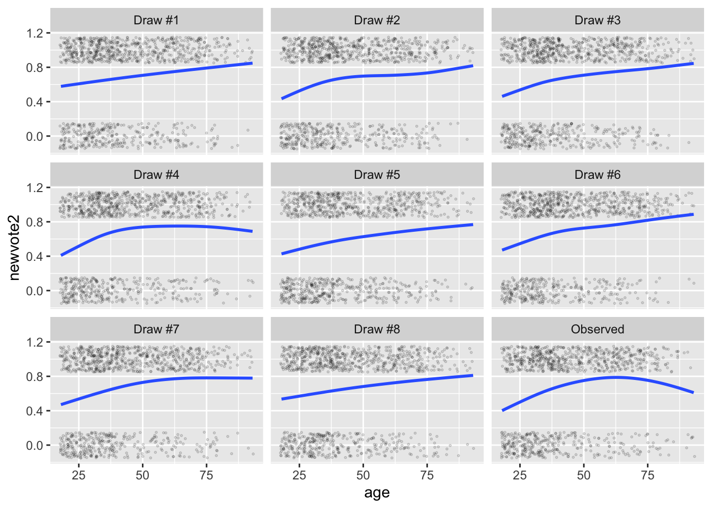

3.4 [Posterior] Predictive Distribution
As with simple models without covariates, we can use the predictive distribution and the posterior predictive distribution to understand models with covariate. In fact, these tools become more valuable as the complexity of the model increases.
3.4.1 … for the logit model
scobit <- haven::read_dta("data/scobit.dta") %>%
filter(newvote != -1) %>% # weird -1s in data; unsure if sufficient
glimpse()## Rows: 99,676
## Columns: 16
## $ state <dbl> 93, 93, 93, 93, 93, 93, 93, 93, 93, 93, 93, 93, 93, 93, 93, 9…
## $ vote <dbl> 1, 1, 2, 1, 1, 1, 2, 1, 1, 1, 1, 1, 1, 1, 1, 1, 1, 1, 1, 2, 2…
## $ age <dbl> 60, 80, 32, 25, 55, 63, 20, 53, 49, 27, 58, 56, 34, 34, 35, 3…
## $ educ <dbl> 13, 13, 13, 13, 11, 14, 11, 11, 13, 13, 11, 13, 19, 19, 15, 1…
## $ citizen <dbl> 1, 1, 1, 1, 1, 1, 1, 1, 1, 1, 1, 1, 1, 1, 1, 1, 1, 1, 1, 1, 1…
## $ rweight <dbl> 207134, 215836, 184639, 184883, 168557, 179148, 181510, 19285…
## $ south <dbl> 0, 0, 0, 0, 0, 0, 0, 0, 0, 0, 0, 0, 0, 0, 0, 0, 0, 0, 0, 0, 0…
## $ gov <dbl> 0, 0, 0, 0, 0, 0, 0, 0, 0, 0, 0, 0, 0, 0, 0, 0, 0, 0, 0, 0, 0…
## $ closing <dbl> 29, 29, 29, 29, 29, 29, 29, 29, 29, 29, 29, 29, 29, 29, 29, 2…
## $ age2 <dbl> 3600, 6400, 1024, 625, 3025, 3969, 400, 2809, 2401, 729, 3364…
## $ educ2 <dbl> 25, 25, 25, 25, 16, 36, 16, 16, 25, 25, 16, 25, 64, 64, 36, 2…
## $ cloeduc <dbl> 145, 145, 145, 145, 116, 174, 116, 116, 145, 145, 116, 145, 2…
## $ cloeduc2 <dbl> 725, 725, 725, 725, 464, 1044, 464, 464, 725, 725, 464, 725, …
## $ newvote <dbl> 1, 1, 0, 1, 1, 1, 0, 1, 1, 1, 1, 1, 1, 1, 1, 1, 1, 1, 1, 0, 0…
## $ newage <dbl> 0, 0, 0, 0, 0, 0, 0, 0, 0, 0, 0, 0, 0, 0, 0, 0, 0, 0, 0, 0, 0…
## $ neweduc <dbl> 5, 5, 5, 5, 4, 6, 4, 4, 5, 5, 4, 5, 8, 8, 6, 5, 5, 3, 5, 1, 6…f <- newvote ~ poly(neweduc, 2, raw = TRUE) + closing + poly(age, 2, raw = TRUE) + south + gov
fit <- glm(f, data = scobit, family = "binomial")
# compute estimates of linear predictor and pi
linpred_hat <- predict(fit, type = "link") # on scale of linear predictor
pi_hat <- predict(fit, type = "response") # on probability scale
# put observed data into a data frame with linpred and pi ests
observed_data <- scobit %>%
mutate(type = "observed",
linpred_hat = linpred_hat,
pi_hat = pi_hat)
# create data frames with simulated data from predictive distribution
sim_list <- list()
for (i in 1:5) {
y_tilde <- rbinom(nrow(observed_data), size = 1, prob = pi_hat)
sim_list[[i]] <- observed_data %>%
mutate(newvote = y_tilde,
type = paste0("simulated #", i))
}
# bind data together
gg_data <- bind_rows(sim_list) %>%
bind_rows(observed_data) %>%
glimpse()## Rows: 598,056
## Columns: 19
## $ state <dbl> 93, 93, 93, 93, 93, 93, 93, 93, 93, 93, 93, 93, 93, 93, 93…
## $ vote <dbl> 1, 1, 2, 1, 1, 1, 2, 1, 1, 1, 1, 1, 1, 1, 1, 1, 1, 1, 1, 2…
## $ age <dbl> 60, 80, 32, 25, 55, 63, 20, 53, 49, 27, 58, 56, 34, 34, 35…
## $ educ <dbl> 13, 13, 13, 13, 11, 14, 11, 11, 13, 13, 11, 13, 19, 19, 15…
## $ citizen <dbl> 1, 1, 1, 1, 1, 1, 1, 1, 1, 1, 1, 1, 1, 1, 1, 1, 1, 1, 1, 1…
## $ rweight <dbl> 207134, 215836, 184639, 184883, 168557, 179148, 181510, 19…
## $ south <dbl> 0, 0, 0, 0, 0, 0, 0, 0, 0, 0, 0, 0, 0, 0, 0, 0, 0, 0, 0, 0…
## $ gov <dbl> 0, 0, 0, 0, 0, 0, 0, 0, 0, 0, 0, 0, 0, 0, 0, 0, 0, 0, 0, 0…
## $ closing <dbl> 29, 29, 29, 29, 29, 29, 29, 29, 29, 29, 29, 29, 29, 29, 29…
## $ age2 <dbl> 3600, 6400, 1024, 625, 3025, 3969, 400, 2809, 2401, 729, 3…
## $ educ2 <dbl> 25, 25, 25, 25, 16, 36, 16, 16, 25, 25, 16, 25, 64, 64, 36…
## $ cloeduc <dbl> 145, 145, 145, 145, 116, 174, 116, 116, 145, 145, 116, 145…
## $ cloeduc2 <dbl> 725, 725, 725, 725, 464, 1044, 464, 464, 725, 725, 464, 72…
## $ newvote <dbl> 1, 1, 1, 1, 1, 1, 0, 1, 1, 1, 1, 1, 1, 1, 1, 1, 0, 1, 1, 0…
## $ newage <dbl> 0, 0, 0, 0, 0, 0, 0, 0, 0, 0, 0, 0, 0, 0, 0, 0, 0, 0, 0, 0…
## $ neweduc <dbl> 5, 5, 5, 5, 4, 6, 4, 4, 5, 5, 4, 5, 8, 8, 6, 5, 5, 3, 5, 1…
## $ type <chr> "simulated #1", "simulated #1", "simulated #1", "simulated…
## $ linpred_hat <dbl> 1.35582513, 1.33800426, 0.27569097, -0.19579006, 0.7610264…
## $ pi_hat <dbl> 0.7950803, 0.7921616, 0.5684895, 0.4512082, 0.6815766, 0.8…# plot fake and obs data against linear predictor.
ggplot(gg_data, aes(x = linpred_hat, y = newvote)) +
geom_jitter(height = 0.05, alpha = 0.01, shape = 21, size = 0.3) +
facet_wrap(vars(type)) +
geom_smooth()## `geom_smooth()` using method = 'gam' and formula 'y ~ s(x, bs = "cs")'
# plot fake and obs data against age.
ggplot(gg_data, aes(x = age, y = newvote)) +
geom_jitter(height = 0.05, alpha = 0.01, shape = 21, size = 0.3) +
facet_wrap(vars(type)) +
geom_smooth(se = FALSE)## `geom_smooth()` using method = 'gam' and formula 'y ~ s(x, bs = "cs")'This model, because we included a second-order polynomial for age, does a great job of picking up the nonlinear relationship between age and voting. If we replace the polynomial with a simple linear term, then the observed and predictive distributions show a stark dissimilarity.
f <- newvote ~ poly(neweduc, 2, raw = TRUE) + closing + age + south + gov
fit <- glm(f, data = scobit, family = "binomial")
observed_data <- scobit %>%
mutate(type = "observed",
linpred_hat = predict(fit, type = "link"))
sim_list <- list()
for (i in 1:5) {
y_tilde <- rbinom(nrow(observed_data), size = 1, prob = plogis(observed_data$linpred_hat))
sim_list[[i]] <- observed_data %>%
mutate(newvote = y_tilde,
type = paste0("simulated #", i))
}
gg_data <- bind_rows(sim_list) %>%
bind_rows(observed_data) %>%
glimpse()## Rows: 598,056
## Columns: 18
## $ state <dbl> 93, 93, 93, 93, 93, 93, 93, 93, 93, 93, 93, 93, 93, 93, 93…
## $ vote <dbl> 1, 1, 2, 1, 1, 1, 2, 1, 1, 1, 1, 1, 1, 1, 1, 1, 1, 1, 1, 2…
## $ age <dbl> 60, 80, 32, 25, 55, 63, 20, 53, 49, 27, 58, 56, 34, 34, 35…
## $ educ <dbl> 13, 13, 13, 13, 11, 14, 11, 11, 13, 13, 11, 13, 19, 19, 15…
## $ citizen <dbl> 1, 1, 1, 1, 1, 1, 1, 1, 1, 1, 1, 1, 1, 1, 1, 1, 1, 1, 1, 1…
## $ rweight <dbl> 207134, 215836, 184639, 184883, 168557, 179148, 181510, 19…
## $ south <dbl> 0, 0, 0, 0, 0, 0, 0, 0, 0, 0, 0, 0, 0, 0, 0, 0, 0, 0, 0, 0…
## $ gov <dbl> 0, 0, 0, 0, 0, 0, 0, 0, 0, 0, 0, 0, 0, 0, 0, 0, 0, 0, 0, 0…
## $ closing <dbl> 29, 29, 29, 29, 29, 29, 29, 29, 29, 29, 29, 29, 29, 29, 29…
## $ age2 <dbl> 3600, 6400, 1024, 625, 3025, 3969, 400, 2809, 2401, 729, 3…
## $ educ2 <dbl> 25, 25, 25, 25, 16, 36, 16, 16, 25, 25, 16, 25, 64, 64, 36…
## $ cloeduc <dbl> 145, 145, 145, 145, 116, 174, 116, 116, 145, 145, 116, 145…
## $ cloeduc2 <dbl> 725, 725, 725, 725, 464, 1044, 464, 464, 725, 725, 464, 72…
## $ newvote <dbl> 1, 0, 0, 0, 0, 0, 0, 0, 1, 1, 1, 1, 1, 1, 1, 1, 0, 1, 1, 0…
## $ newage <dbl> 0, 0, 0, 0, 0, 0, 0, 0, 0, 0, 0, 0, 0, 0, 0, 0, 0, 0, 0, 0…
## $ neweduc <dbl> 5, 5, 5, 5, 4, 6, 4, 4, 5, 5, 4, 5, 8, 8, 6, 5, 5, 3, 5, 1…
## $ type <chr> "simulated #1", "simulated #1", "simulated #1", "simulated…
## $ linpred_hat <dbl> 1.227725576, 1.973989420, 0.182956194, -0.078236152, 0.510…ggplot(gg_data, aes(x = age, y = newvote)) +
geom_jitter(height = 0.05, alpha = 0.01, shape = 21, size = 0.3) +
facet_wrap(vars(type)) +
geom_smooth(se = FALSE)## `geom_smooth()` using method = 'gam' and formula 'y ~ s(x, bs = "cs")'We can do this same thing with Stan. However, working with the posterior simulations can be tricky. I use tidybayes add_predicted_draws() function along with some clever pivoting to get the data ready for ggplot().
library(rstanarm); options(mc.cores = parallel::detectCores())## Loading required package: Rcpp## This is rstanarm version 2.21.1## - See https://mc-stan.org/rstanarm/articles/priors for changes to default priors!## - Default priors may change, so it's safest to specify priors, even if equivalent to the defaults.## - For execution on a local, multicore CPU with excess RAM we recommend calling## options(mc.cores = parallel::detectCores())small_scobit <- sample_n(scobit, 1000) # subsample b/c model is slow
stan_fit <- stan_glm(f, data = small_scobit, family = "binomial")library(tidybayes)
ppd <- small_scobit %>%
add_predicted_draws(stan_fit, ndraws = 8) %>%
mutate(.draw = paste0("Draw #", .draw)) %>%
pivot_wider(names_from = .draw, values_from = .prediction) %>%
mutate(`Observed` = newvote) %>%
pivot_longer(`Draw #1`:`Observed`, names_to = "type", values_to = "newvote2") %>%
glimpse()## Rows: 9,000
## Columns: 21
## Groups: state, vote, age, educ, citizen, rweight, south, gov, closing, age2, educ2, cloeduc, cloeduc2, newvote, newage, neweduc, .row [1,000]
## $ state <dbl> 14, 14, 14, 14, 14, 14, 14, 14, 14, 71, 71, 71, 71, 71, 71,…
## $ vote <dbl> 2, 2, 2, 2, 2, 2, 2, 2, 2, 1, 1, 1, 1, 1, 1, 1, 1, 1, 1, 1,…
## $ age <dbl> 52, 52, 52, 52, 52, 52, 52, 52, 52, 27, 27, 27, 27, 27, 27,…
## $ educ <dbl> 12, 12, 12, 12, 12, 12, 12, 12, 12, 15, 15, 15, 15, 15, 15,…
## $ citizen <dbl> 1, 1, 1, 1, 1, 1, 1, 1, 1, 1, 1, 1, 1, 1, 1, 1, 1, 1, 1, 1,…
## $ rweight <dbl> 95264, 95264, 95264, 95264, 95264, 95264, 95264, 95264, 952…
## $ south <dbl> 0, 0, 0, 0, 0, 0, 0, 0, 0, 0, 0, 0, 0, 0, 0, 0, 0, 0, 1, 1,…
## $ gov <dbl> 0, 0, 0, 0, 0, 0, 0, 0, 0, 1, 1, 1, 1, 1, 1, 1, 1, 1, 0, 0,…
## $ closing <dbl> 28, 28, 28, 28, 28, 28, 28, 28, 28, 20, 20, 20, 20, 20, 20,…
## $ age2 <dbl> 2704, 2704, 2704, 2704, 2704, 2704, 2704, 2704, 2704, 729, …
## $ educ2 <dbl> 16, 16, 16, 16, 16, 16, 16, 16, 16, 36, 36, 36, 36, 36, 36,…
## $ cloeduc <dbl> 112, 112, 112, 112, 112, 112, 112, 112, 112, 120, 120, 120,…
## $ cloeduc2 <dbl> 448, 448, 448, 448, 448, 448, 448, 448, 448, 720, 720, 720,…
## $ newvote <dbl> 0, 0, 0, 0, 0, 0, 0, 0, 0, 1, 1, 1, 1, 1, 1, 1, 1, 1, 1, 1,…
## $ newage <dbl> 0, 0, 0, 0, 0, 0, 0, 0, 0, 0, 0, 0, 0, 0, 0, 0, 0, 0, 0, 0,…
## $ neweduc <dbl> 4, 4, 4, 4, 4, 4, 4, 4, 4, 6, 6, 6, 6, 6, 6, 6, 6, 6, 5, 5,…
## $ .row <int> 1, 1, 1, 1, 1, 1, 1, 1, 1, 2, 2, 2, 2, 2, 2, 2, 2, 2, 3, 3,…
## $ .chain <int> NA, NA, NA, NA, NA, NA, NA, NA, NA, NA, NA, NA, NA, NA, NA,…
## $ .iteration <int> NA, NA, NA, NA, NA, NA, NA, NA, NA, NA, NA, NA, NA, NA, NA,…
## $ type <chr> "Draw #1", "Draw #2", "Draw #3", "Draw #4", "Draw #5", "Dra…
## $ newvote2 <dbl> 0, 0, 1, 0, 1, 0, 1, 1, 0, 0, 0, 0, 0, 1, 1, 0, 0, 1, 1, 0,…ggplot(ppd, aes(x = age, y = newvote2)) +
geom_jitter(height = 0.15, alpha = 0.2, shape = 21, size = 0.3) +
facet_wrap(vars(type)) +
geom_smooth(se = FALSE)## `geom_smooth()` using method = 'gam' and formula 'y ~ s(x, bs = "cs")'
3.4.2 … for the Poisson model
The code below repeated this exercise for the Poisson model using the HKS data.
# load hks data
hks <- read_csv("data/hks.csv") %>%
na.omit()## Rows: 3972 Columns: 10
## ── Column specification ────────────────────────────────────────────────────────
## Delimiter: ","
## dbl (10): osvAll, troopLag, policeLag, militaryobserversLag, brv_AllLag, osv...
##
## ℹ Use `spec()` to retrieve the full column specification for this data.
## ℹ Specify the column types or set `show_col_types = FALSE` to quiet this message.# fit poisson model
f <- osvAll ~ troopLag + policeLag + militaryobserversLag +
brv_AllLag + osvAllLagDum + incomp + epduration +
lntpop
fit <- glm(f, data = hks, family = poisson)
# simulate fake data from predictive distribution
observed_data <- hks %>%
mutate(type = "observed",
linpred_hat = predict(fit, type = "link"))
sim_list <- list()
for (i in 1:5) {
sim_list[[i]] <- observed_data %>%
mutate(osvAll = rpois(nrow(observed_data),
lambda = exp(observed_data$linpred_hat)),
type = paste0("simulated #", i))
}
gg_data <- bind_rows(sim_list) %>%
bind_rows(observed_data) %>%
glimpse()## Rows: 22,476
## Columns: 12
## $ osvAll <dbl> 298, 337, 1068, 284, 411, 215, 207, 190, 182, 211…
## $ troopLag <dbl> 0, 0, 0, 0, 0, 0, 0, 0, 0, 0, 0, 0, 0, 0, 0, 0, 0…
## $ policeLag <dbl> 0, 0, 0, 0, 0, 0, 0, 0, 0, 0, 0, 0, 0, 0, 0, 0, 0…
## $ militaryobserversLag <dbl> 0, 0, 0, 0, 0, 0, 0, 0, 0, 0, 0, 0, 0, 0, 0, 0, 0…
## $ brv_AllLag <dbl> 0, 138, 2428, 30, 850, 0, 0, 0, 0, 0, 0, 0, 0, 0,…
## $ osvAllLagDum <dbl> 1, 1, 1, 1, 1, 0, 0, 0, 0, 0, 0, 0, 0, 0, 0, 0, 0…
## $ incomp <dbl> 2, 2, 2, 2, 2, 2, 2, 2, 2, 2, 2, 2, 2, 2, 2, 2, 2…
## $ epduration <dbl> 2, 3, 4, 5, 6, 7, 8, 9, 10, 11, 12, 13, 14, 15, 1…
## $ lntpop <dbl> 10.88525, 10.88525, 10.88525, 10.88525, 10.88525,…
## $ conflict_id <dbl> 70, 70, 70, 70, 70, 70, 70, 70, 70, 70, 70, 70, 7…
## $ type <chr> "simulated #1", "simulated #1", "simulated #1", "…
## $ linpred_hat <dbl> 5.701372, 5.756500, 7.017963, 5.651498, 6.088931,…# plot fake and observed data against linear predictor
ggplot(gg_data, aes(x = linpred_hat, y = osvAll + 1)) +
geom_point(alpha = 0.1, shape = 21, size = 0.3) +
facet_wrap(vars(type)) +
scale_y_log10()
# plot fake and observed data against number of troops
ggplot(gg_data, aes(x = troopLag, y = osvAll + 1)) +
geom_point(alpha = 0.3, shape = 21, size = 0.3) +
facet_wrap(vars(type)) +
scale_y_log10() +
geom_smooth(se = FALSE)## `geom_smooth()` using method = 'gam' and formula 'y ~ s(x, bs = "cs")'
And below is code to work with the posterior predictive distribution.
stan_fit <- stan_glm(f, data = hks, family = "poisson", chains = 1)ppd <- hks %>%
add_predicted_draws(stan_fit, ndraws = 8) %>%
mutate(.draw = paste0("Draw #", .draw)) %>%
pivot_wider(names_from = .draw, values_from = .prediction) %>%
mutate(`Observed` = osvAll) %>%
pivot_longer(`Draw #1`:`Observed`, names_to = "type", values_to = "osvAll2") %>%
glimpse()## Rows: 33,714
## Columns: 15
## Groups: osvAll, troopLag, policeLag, militaryobserversLag, brv_AllLag, osvAllLagDum, incomp, epduration, lntpop, conflict_id, .row [3,746]
## $ osvAll <dbl> 4, 4, 4, 4, 4, 4, 4, 4, 4, 1, 1, 1, 1, 1, 1, 1, 1…
## $ troopLag <dbl> 0, 0, 0, 0, 0, 0, 0, 0, 0, 0, 0, 0, 0, 0, 0, 0, 0…
## $ policeLag <dbl> 0, 0, 0, 0, 0, 0, 0, 0, 0, 0, 0, 0, 0, 0, 0, 0, 0…
## $ militaryobserversLag <dbl> 0, 0, 0, 0, 0, 0, 0, 0, 0, 0, 0, 0, 0, 0, 0, 0, 0…
## $ brv_AllLag <dbl> 0, 0, 0, 0, 0, 0, 0, 0, 0, 138, 138, 138, 138, 13…
## $ osvAllLagDum <dbl> 1, 1, 1, 1, 1, 1, 1, 1, 1, 1, 1, 1, 1, 1, 1, 1, 1…
## $ incomp <dbl> 2, 2, 2, 2, 2, 2, 2, 2, 2, 2, 2, 2, 2, 2, 2, 2, 2…
## $ epduration <dbl> 2, 2, 2, 2, 2, 2, 2, 2, 2, 3, 3, 3, 3, 3, 3, 3, 3…
## $ lntpop <dbl> 10.88525, 10.88525, 10.88525, 10.88525, 10.88525,…
## $ conflict_id <dbl> 70, 70, 70, 70, 70, 70, 70, 70, 70, 70, 70, 70, 7…
## $ .row <int> 1, 1, 1, 1, 1, 1, 1, 1, 1, 2, 2, 2, 2, 2, 2, 2, 2…
## $ .chain <int> NA, NA, NA, NA, NA, NA, NA, NA, NA, NA, NA, NA, N…
## $ .iteration <int> NA, NA, NA, NA, NA, NA, NA, NA, NA, NA, NA, NA, N…
## $ type <chr> "Draw #1", "Draw #2", "Draw #3", "Draw #4", "Draw…
## $ osvAll2 <dbl> 285, 306, 328, 311, 314, 300, 302, 301, 4, 313, 3…ggplot(ppd, aes(x = troopLag, y = osvAll2 + 1)) +
geom_point(alpha = 0.2, shape = 21, size = 0.3) +
facet_wrap(vars(type)) +
geom_smooth(se = FALSE) +
scale_y_log10()## `geom_smooth()` using method = 'gam' and formula 'y ~ s(x, bs = "cs")'